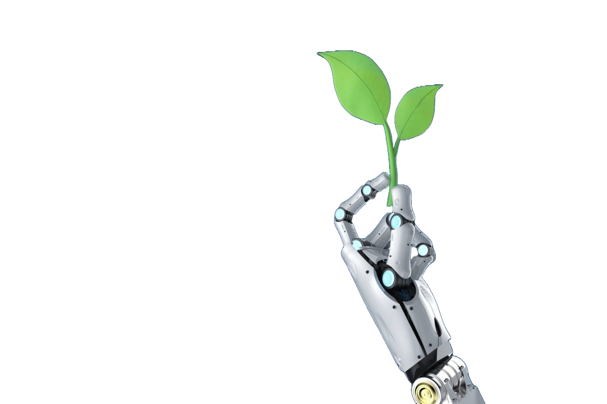

Herbruikbaarheid robots
Millieutoepassing van robots
Voor en nadelen Robotica
Contact
Millieutoepassing van robots
Robots kunnen een grote rol spelen in de natuur dat hebben we gezien bij de onthulling van de
‘Interceptor ’.
Deze robot ontworpen door: ‘The Ocean Cleane up’ organisatie is speciaal gemaakt om de rivieren een stuk schoner
te maken. Deze robot haalt volledig automatisch plastic uit de zee en kan 24/7 werken totdat de containers vol zijn.
De 1ste interceptor was een groot succes en kwam in 2019 voor het eerst tevoorschijn, daarna zijn er nog veel meer
interceptors over de hele wereld gekomen om al het plastic uit de rivieren te halen.
In totaal heeft de interceptor meer dan 1.000.000 kilogram aan plastic uit de zee gehaald. Dat doet hij door een soort
lange barrière in de rivier te leggen over een groot stuk van de breedte, door de stroming wordt al het plastic naar de
conveyor belt gebracht, vanaf daar wordt al het plastic automatisch in container gedropt, de robot verdeeld al het plastic
automatisch over 6 containers tot dat die vol zijn met een sensor gaat dat volledig automatisch,
en uiteindelijk wordt alles opgehaald en gerecycled.
Dit is natuurlijk een geweldige robot die de rivieren een stuk schoner maakt, maar dit is pas de allereerste robot en we kunnen hier nog veel van leren.
In de toekomst verwachten wij nog veel betere robots op veel meer plekken.